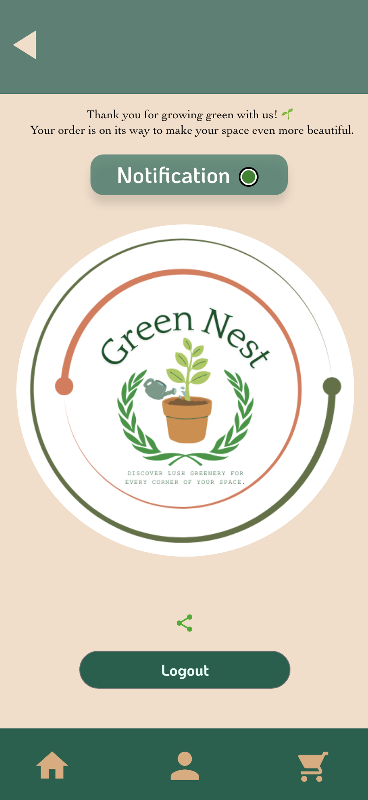
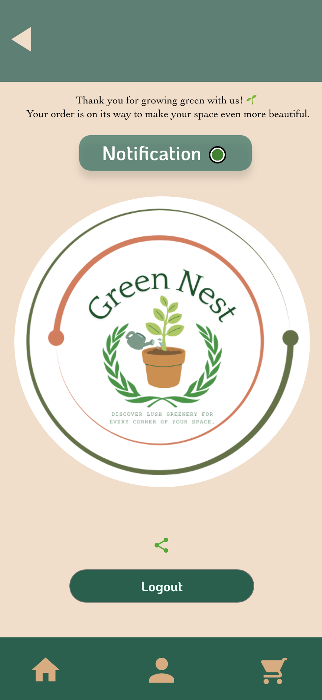

CookMood
Purpose: CookMood is a cooking recipe app that provides step-by-step instructions for a variety of recipes. It also offers creative tips for repurposing leftovers, making it a practical tool for home cooks. This app was my first-term project and highlights my early exploration of UI/UX design principles.
➤ View CookMood Prototype on Adobe XD


GreenNest
Purpose: GreenNest is a plant shop app designed for both advanced and beginner plant enthusiasts. It features an extensive collection of indoor and outdoor plants, along with a notification filter to remind users when to water their plants. This app was my final-term project, showcasing advanced UI/UX design and usability testing.
➤ View GreenNest Prototype on Adobe XD


 

MovieHub
Purpose: MovieHub is an app that provides information on upcoming movies, including detailed descriptions, user reviews, and ratings. This project was part of my midterm exam and demonstrates my ability to design data-driven, interactive interfaces for entertainment platforms.
➤ View MovieHub Prototype on Adobe XD


CoffeeShop
Purpose: CoffeeShop is a class assignment focused on enhancing the user experience for the add-to-cart feature. I implemented functionality where users can directly add items to the cart by clicking on the price. This project highlights my problem-solving and quick prototyping skills.
➤ View CoffeeShop Prototype on Adobe XD